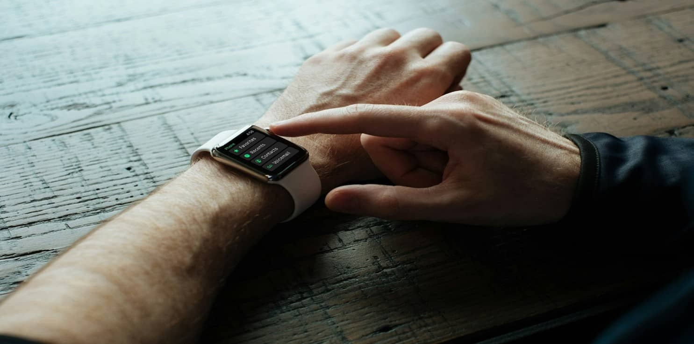

Pavlok Bands: Custom Fit for Your Habit-Breaking Journey
When you think about a wearable device that helps you break bad habits, every little detail matters. At the heart of your Pavlok experience is the band. Whether you’re using a Pavlok 2 Band or exploring replacement options, the right strap can mean the difference between a comfortable, long-term relationship with your device and a constant struggle to keep it on.
Choose the Right Pavlok Band for You
Your Pavlok device is designed to help you build new habits by delivering timely feedback—be it a vibration, beep, or a gentle shock. However, all these benefits are only effective if the band is comfortable and durable. Many users begin with the classic Pavlok 2 Band, which is engineered to fit snugly and securely, making it ideal for daily wear. Its lightweight and flexible design, along with multiple color options, ensure that your device matches your style.
If you’re looking for an alternative, the Pavlok Shock Band offers a unique blend of style and functionality. Specifically designed to handle the device’s electrical feedback, it delivers consistent performance without compromising comfort.
Additionally, there’s the Pavlok Watch Band which mimics the style of your favorite smartwatch, providing a sleek, modern aesthetic while ensuring your Pavlok remains a natural part of your daily look.
Find the Band That Keeps You on Track
Your band isn’t merely an accessory—it is a vital component of your habit-breaking journey. A well-fitted, robust band guarantees that your device remains comfortable during prolonged use, supporting you in maintaining consistent habit-breaking efforts. Whether you’re at work, exercising, or simply on the go, a comfortable band ensures that you wear your Pavlok consistently.
Moreover, the right band reflects your personal style. Pavlok offers an array of options, from the minimalist design of the Pavlok 2 Band to the advanced functionality of the Shock Band 2.0, each crafted with both performance and aesthetics in mind.
Replacement and Upgrade Options
Bands may wear out over time or simply fall out of fashion. If you need a replacement, the Pavlok 2 Replacement Band is engineered to mirror the original design and durability. For those seeking an upgrade, the Pavlok Shock Band 2.0 offers enhanced features, including superior conductivity and improved comfort tailored for heavy users.
For fashion-forward users, third-party alternatives such as the Pavlok Milanese Band are also available. This option, often found on platforms like eBay, features a distinctive metal mesh design that merges both elegance and robust functionality for a premium feel.
Where to Find Lost Pavlok Bands
A frequent concern for Pavlok users is the challenge of finding a replacement when a band is lost or worn out. Fortunately, Pavlok provides several replacement options that can be quickly ordered online. If you misplace your band, support resources and customer service are ready to assist you in getting back on track.
Additionally, many users compare Pavlok bands to traditional alternatives like rubber bands. Unlike rubber bands, which offer only a physical reminder, Pavlok bands are specifically engineered to work in tandem with the device’s advanced haptic feedback technology, making them an indispensable tool for effective habit change.
Looking Ahead: Your Habit-Breaking Future
As you move forward in your journey to break bad habits, remember that every detail counts. The right Pavlok band isn’t just a piece of hardware—it’s a partner in achieving your personal transformation goals. With various replacement and upgrade options available, there’s always a band that can evolve with your needs and style.
In summary, selecting the perfect band is crucial for an optimal Pavlok experience. Whether your priority is comfort, durability, or advanced functionality, Pavlok offers a range of bands designed to keep you on track toward a healthier, habit-free lifestyle.